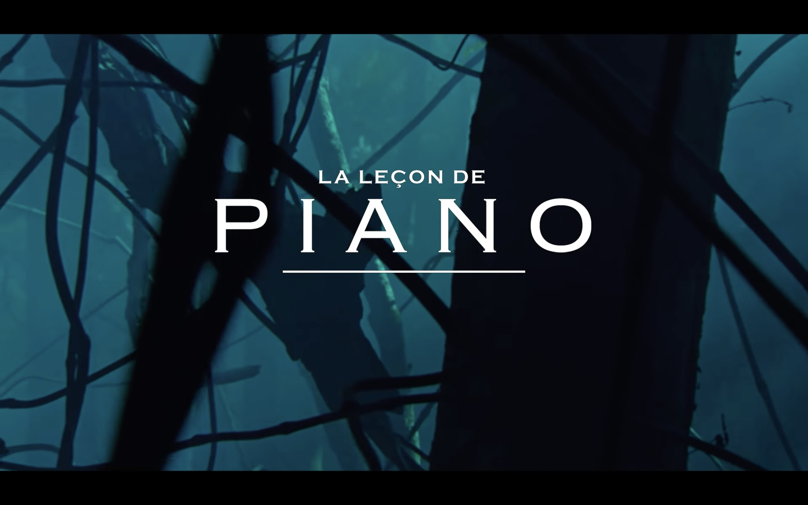
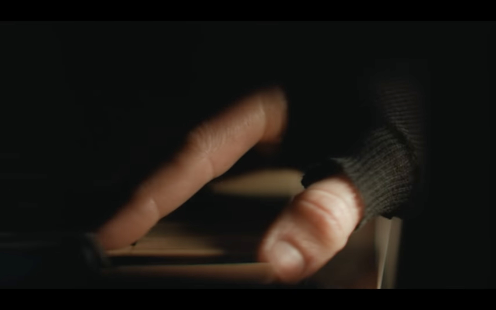
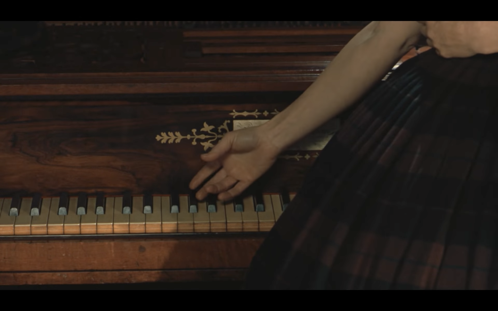
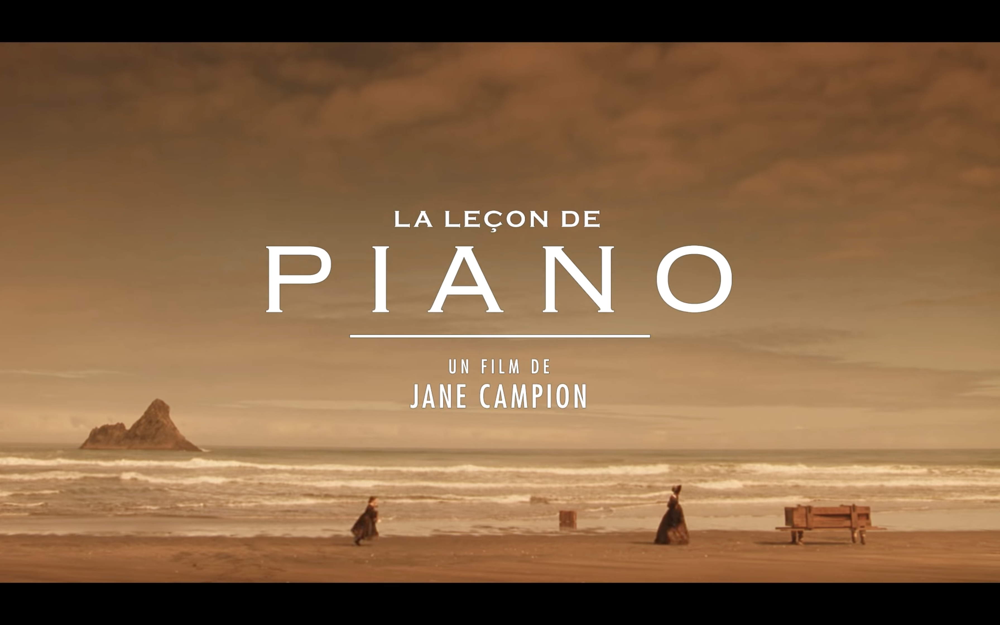
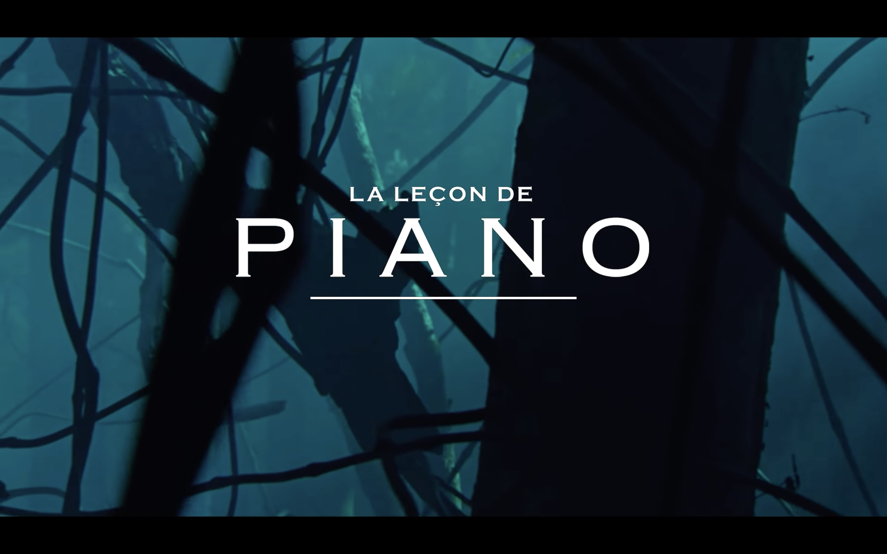
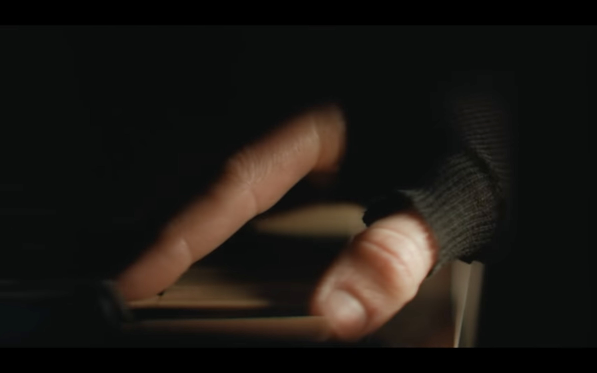
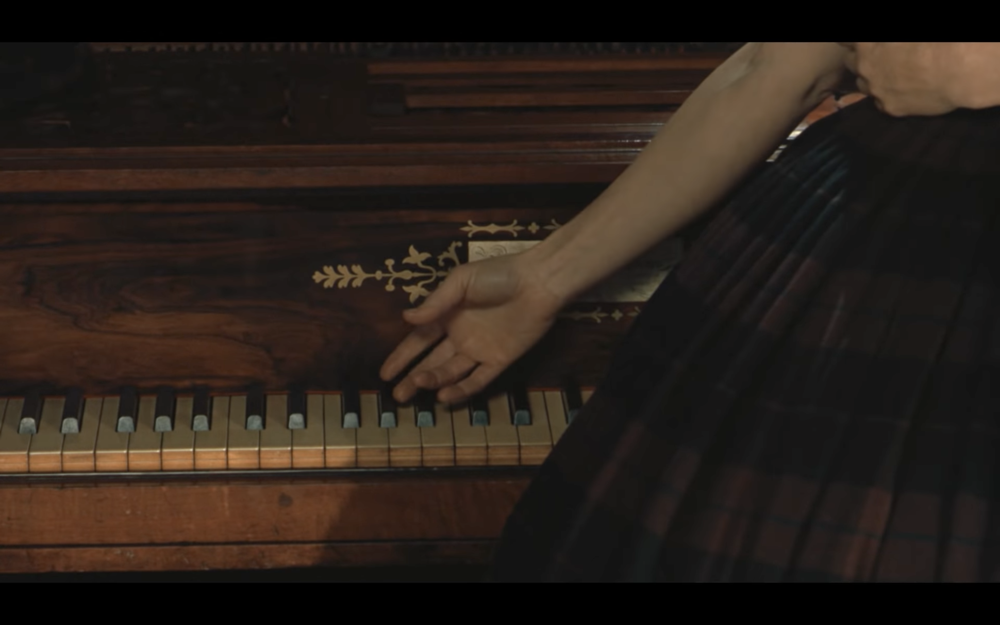
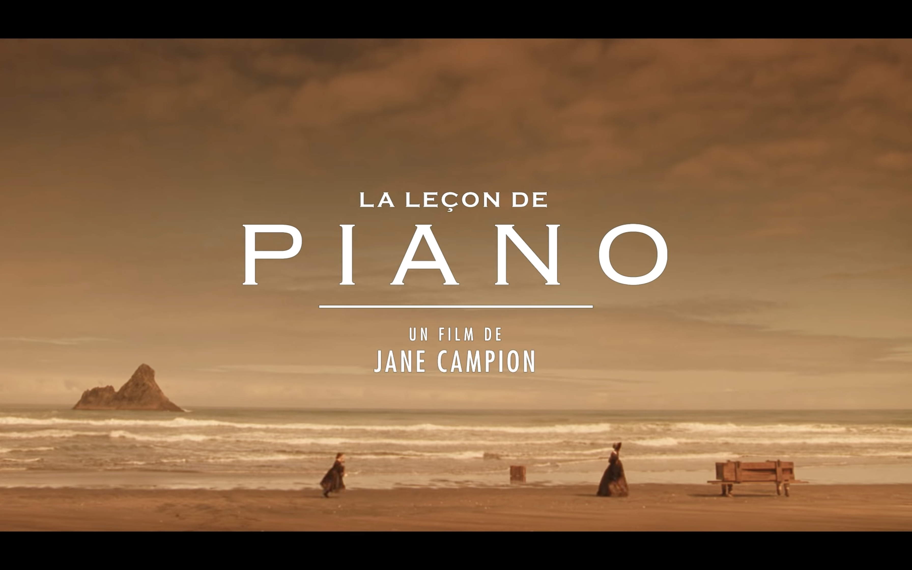

Compositeur
Michel Nyman est née le 23 mars en 1944 à Stratford à Londres en Angleterre. Ce monsieur est un compositeur mais également un pianiste. Le style de musique qu’il produit est la musique contemporaine (musique minimaliste).

Réalisateur
Jane Campion est réalisatrice scénariste née le 30 avril en 1954 à Wellington en Nouvelle-Zélande. Elle a actuellement 68 ans, et a réaliser 5 films notables comme Sweeties, un ange à ma table, La leçon de piano, Bright Star et the Power of the Dog. Jane à également réaliser Une Série notable tel que Top of the Lake.
La leçon de Piano
Jane Campion
La leçon de piano est un filme produit en s’inspirant du 14e siècle, parlant de la vie d’une jeune femme et de sa fille. Le père de la femme (Ada MacGrath) envoie sa fille en Nouvelle-Zélande pour épouser un colon. Depuis la mort tragique de son dernier marie (mort foudroyer quand il chantait avec sa femme en forêt), la jeune femme n’as plus parler ni chanter, et ne s’exprime plus qu’avec la langue de signes et les mélodies composées à l’aide de son Piano, que plus tard elle devra vendre en échange d’un terrain. Sa fille (Flora) aide sa mère à communiquer, en traduisant ses gestes en paroles.
 



Bande-annonce




Bande-annonce